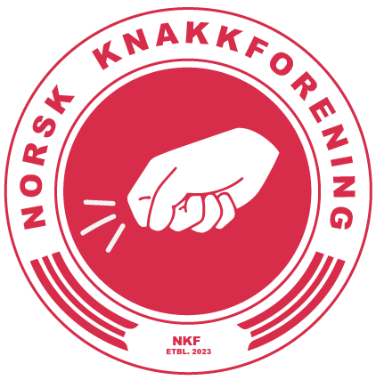

<div class="max-w-7xl mx-auto px-4">
    <header class="text-center py-8">
        <h1 class="text-5xl font-bold mb-4">Kortspillet<br><span class="text-primary">Knakk</span></h1>
        <a href="index.html"> </a>
        <div class="navbar bg-base-200 rounded-lg shadow-lg">
            <div class="navbar-center mx-auto">
                <ul class="menu menu-horizontal">
                    <li><a href="index.html#regler">Spillregler</a></li>
                    <li><a href="index.html#om">Om Knakkforeningen</a></li>
                    <li><a href="resultat.html">Regn ut resultat</a></li>
                </ul>
            </div>
        </div>
    </header>
    <style>
        #logo {
            transition: transform 0.1s;
        }
    </style>
    <script>
      let rotation = 0;
      let scrollLoc = window.pageYOffset;
      const maxRotation = 20; 
    
      window.addEventListener("scroll", function() {
        let newPos = window.pageYOffset;
        let diff = newPos - scrollLoc;
        rotation += diff * 0.2; 
        rotation = Math.max(-maxRotation, Math.min(maxRotation, rotation));
        scrollLoc = newPos;

        document.getElementById("logo").style.transform = `rotate(${rotation}deg)`;
      });

              // Reset rotation when page is refreshed or accessed via anchor link
              window.addEventListener("load", function() {
            rotation = 0;
            document.getElementById("logo").style.transform = `rotate(0deg)`;
        });
    </script>
</div>